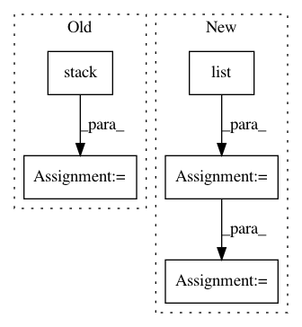

2cfa9aa576ae7544f76e66854edd304690a5822b,paderbox/speech_enhancement/beamformer_wrapper.py,,get_multi_source_bf_vector_from_masks,#Any#Any#Any#Any#Any#Any#Any#,334
Before Change
f"np.max(np.abs(beamforming_vector)) = {value}"
)
else:
beamforming_vector = np.stack(list(
pb.speech_enhancement.get_single_source_bf_vector(
method,
target_psd_matrix=target_psd[:, k, :, :],
noise_psd_matrix=interference_psd[:, k, :, :],
) for k in range(K)
), axis=1)
return beamforming_vector
After Change
denominator_matrix_for_ban, denominator_matrix_for_bf
)
beamforming_vector = list()
for k in range(K - 1):
if denominator_matrix_for_bf is None:
denominator_matrix = None
elif denominator_matrix_for_bf == "noise":
denominator_matrix = target_psd[:, -1, :, :]
elif denominator_matrix_for_bf == "interference":
denominator_matrix = interference_psd[:, k, :, :]
beamforming_vector.append(
pb.speech_enhancement.get_single_source_bf_vector(
method,
target_psd_matrix=target_psd[:, k, :, :],
noise_psd_matrix=denominator_matrix,
)
)
beamforming_vector = np.stack(beamforming_vector, axis=1)
return beamforming_vector
In pattern: SUPERPATTERN
Frequency: 3
Non-data size: 5
Instances
Project Name: fgnt/pb_bss
Commit Name: 2cfa9aa576ae7544f76e66854edd304690a5822b
Time: 2019-08-08
Author: mail@lukas-drude.de
File Name: paderbox/speech_enhancement/beamformer_wrapper.py
Class Name:
Method Name: get_multi_source_bf_vector_from_masks
Project Name: analysiscenter/batchflow
Commit Name: eba587e7549e252036f2500e9a3b3a18a778b335
Time: 2017-11-17
Author: rhudor@gmail.com
File Name: dataset/batch_image.py
Class Name: ImagesBatch
Method Name: assemble
Project Name: eriklindernoren/PyTorch-YOLOv3
Commit Name: b591a7aecce5b8de42a0dd7bba62780675d34fce
Time: 2019-04-30
Author: eriklindernoren@live.se
File Name: utils/datasets.py
Class Name: ListDataset
Method Name: collate_fn